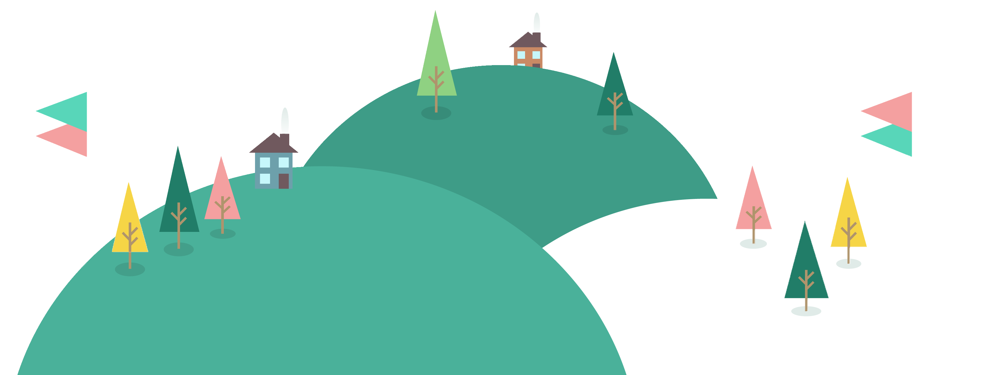

a translator and programmer.
I'm a translator and web designer living in Istanbul, Turkey. I go on my education life at Istanbul Yeniyüzyıl University, department of translation and interpreting. In addition, I proceed to work as a freelancer and develop projects in web development area.
As a result of studying at the Department of Translation and Interpretation, I have a translator's point of view and well analytical skills. I am currently working as a freelancer in this field.
I am interested in the development area continuing to grow day by day, especially web development, and I create my own projects and take part in the projects of others at odd moments.
If you click on any of the links below, you can get in contact with me, describe your project, or let us exchange ideas.